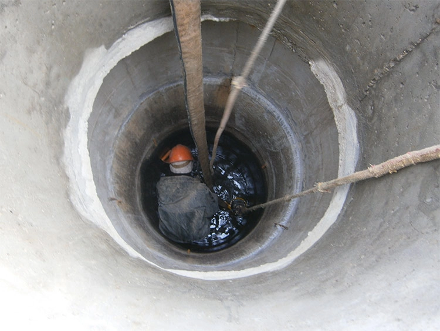
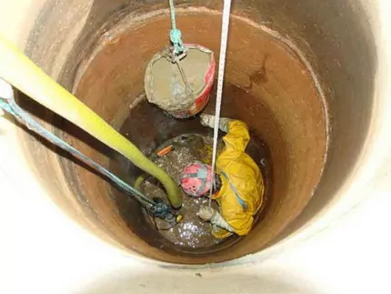
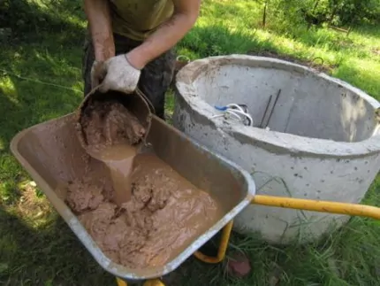
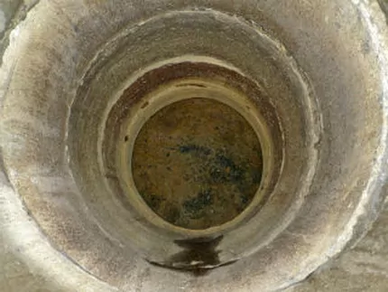
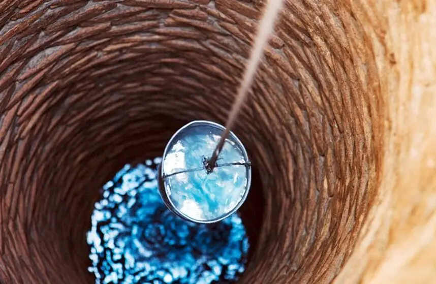

Почистване и удълбочаване на кладенци
⛏️ Копаене · почистване от тиня · възстановяване на дебит
Услуги, които предлагаме
Почистване на кладенец
От тиня, пясък и паднали предмети. Възстановяваме водния дебит на вашия кладенец в Перник.
Удълбочаване на кладенец
Достигане до нови водоносни пластове. Увеличаваме водоизточника при удълбочаване.
Копаене на нови кладенци
Изграждане на кладенци от нулата според вашите нужди в цялата област.
Безплатен оглед и диагностика
Идваме на място, оглеждаме и даваме точна оценка без ангажимент.
👉 Свържете се с нас за безплатен оглед.
Как работим
1. Обаждане
Свързвате се с нас на 0888 12 01 73 – уговаряме безплатен оглед.
2. Безплатен оглед
Идваме на място в Перник или областта и оглеждаме кладенеца.
3. Почистване / удълбочаване
Извършваме работата с професионална техника и опит.
4. Възстановен дебит
Кладенецът отново има чиста вода и повишен водоизток.
Реални обекти в областта
Ето как изглежда работата ни по почистване и удълбочаване на кладенци.





Работим в цяла област Перник
Често задавани въпроси
Колко струва почистване на кладенец?
Цената зависи от дълбочината и степента на затлачване. Обадете се за безплатен оглед и точна оферта.
Колко време отнема удълбочаването?
Обикновено 1-2 дни, в зависимост от терена и дълбочината.
Работите ли през почивните дни?
Да, работим без почивен ден при предварително записване.
Колко се увеличава дебитът след почистване?
Често дебитът се възстановява до 80-100% от първоначалния, а при удълбочаване може да се удвои.
Какви методи използвате?
Работим със специализирана техника – помпи, сонди и ръчен труд от опитни майстори.
Безплатният оглед ли е?
Да, идваме на място, оглеждаме и даваме оценка без никакви задължения.
Свържете се с нас
Изпълняваме поръчки в цяла област Перник
0888 12 01 73📞 Обадете се сега – безплатен оглед и съвет за вашия кладенец